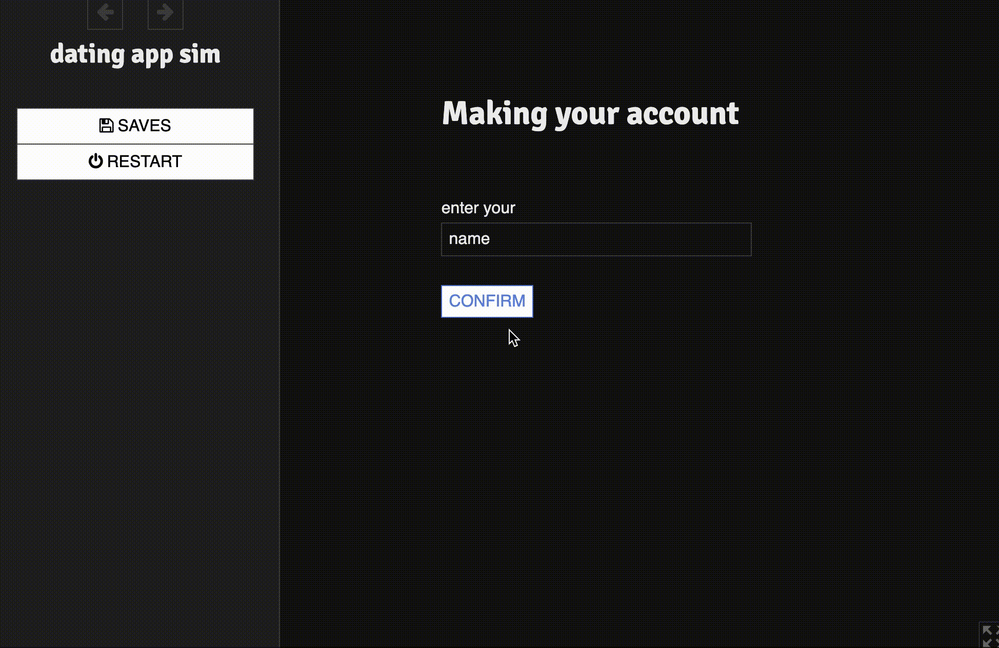
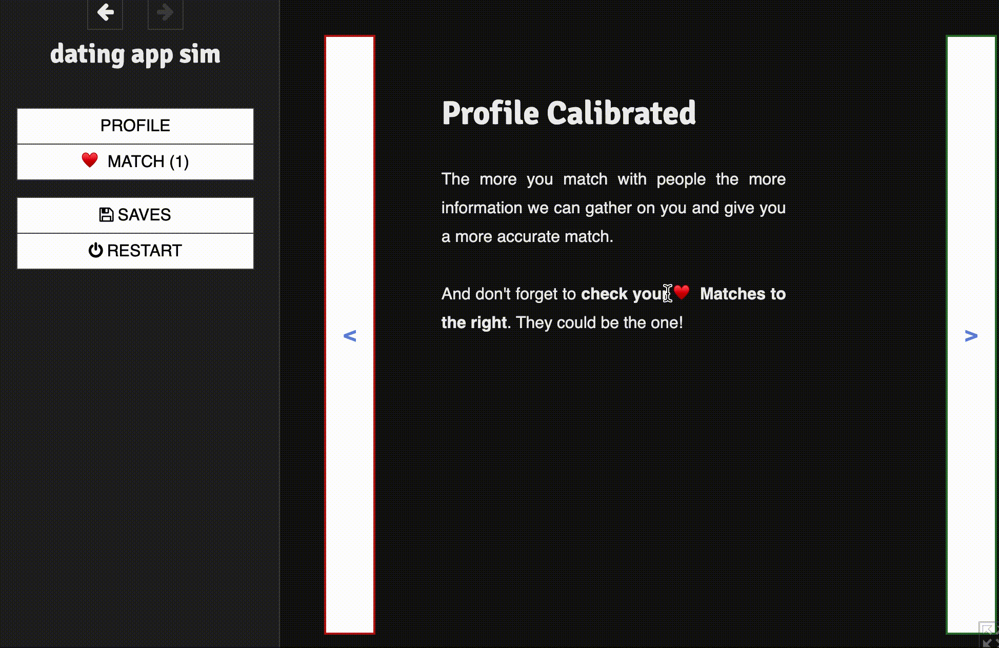
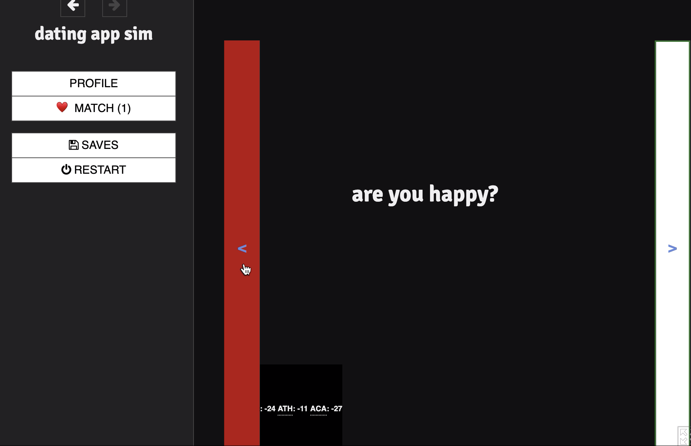
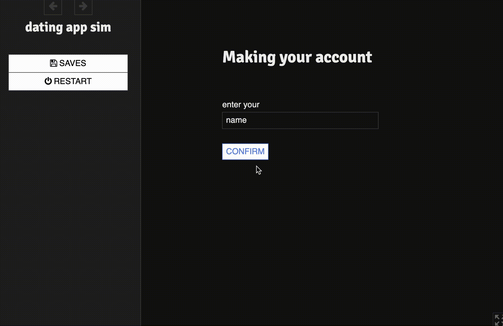
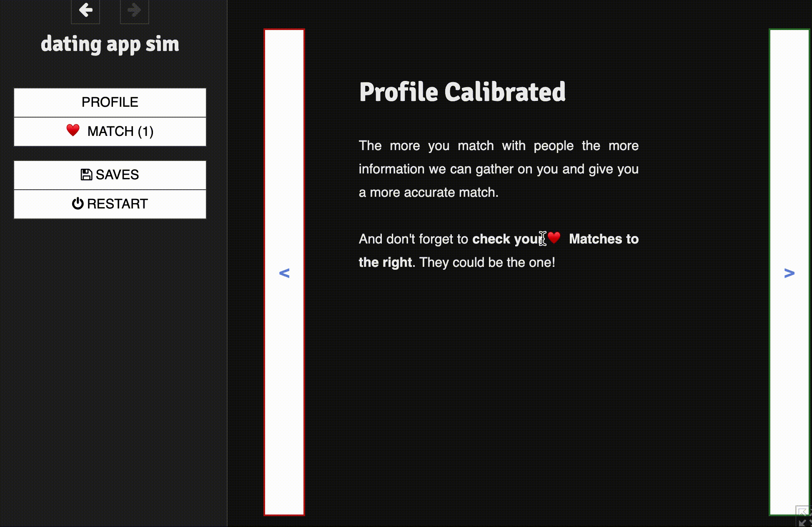
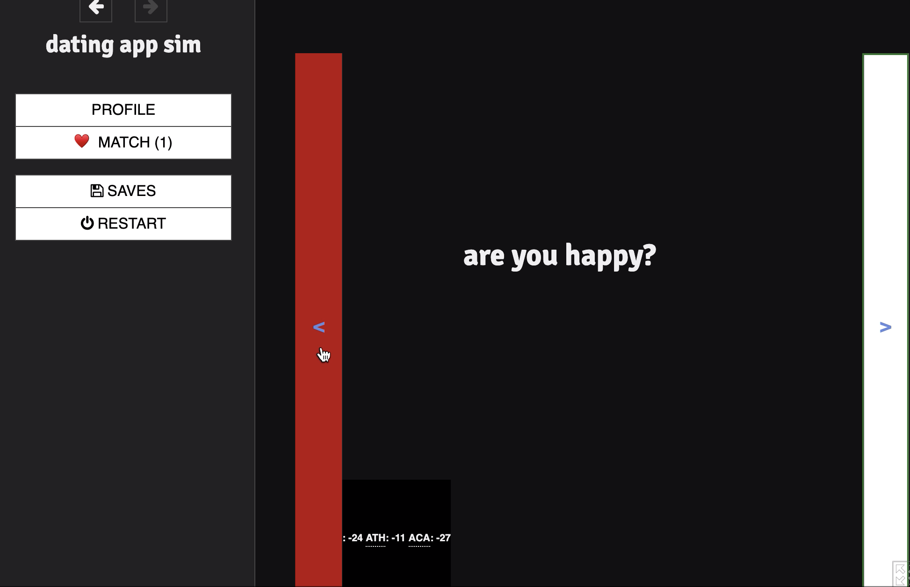

YouMeat Dating App
2020 / Game Designer
Conceptualized and designed a dating app simulation game using Twine. Swipe on potential matches and get closer to finding "the one." Message those you've matched with and get to know those who might be the love of your life.
 




